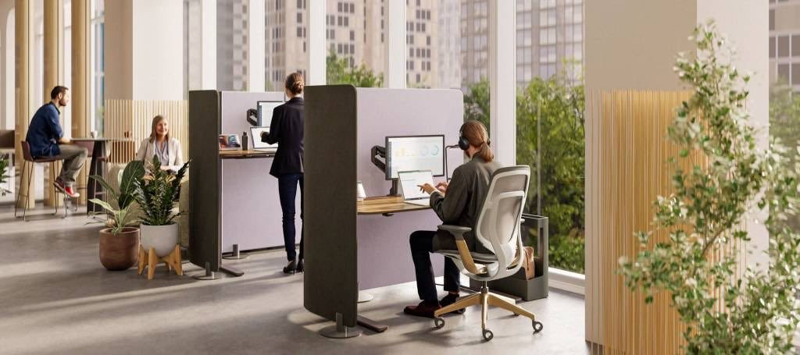
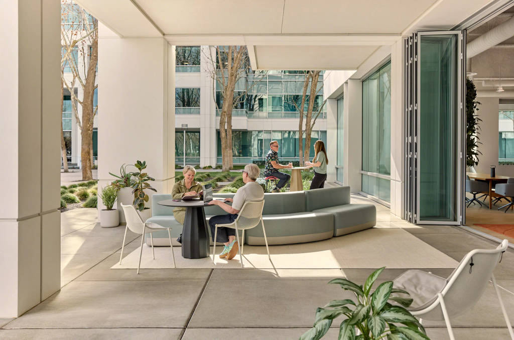
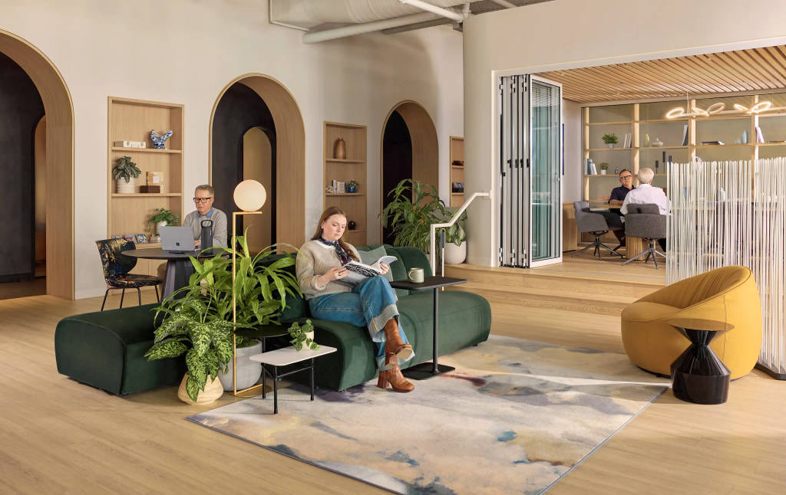
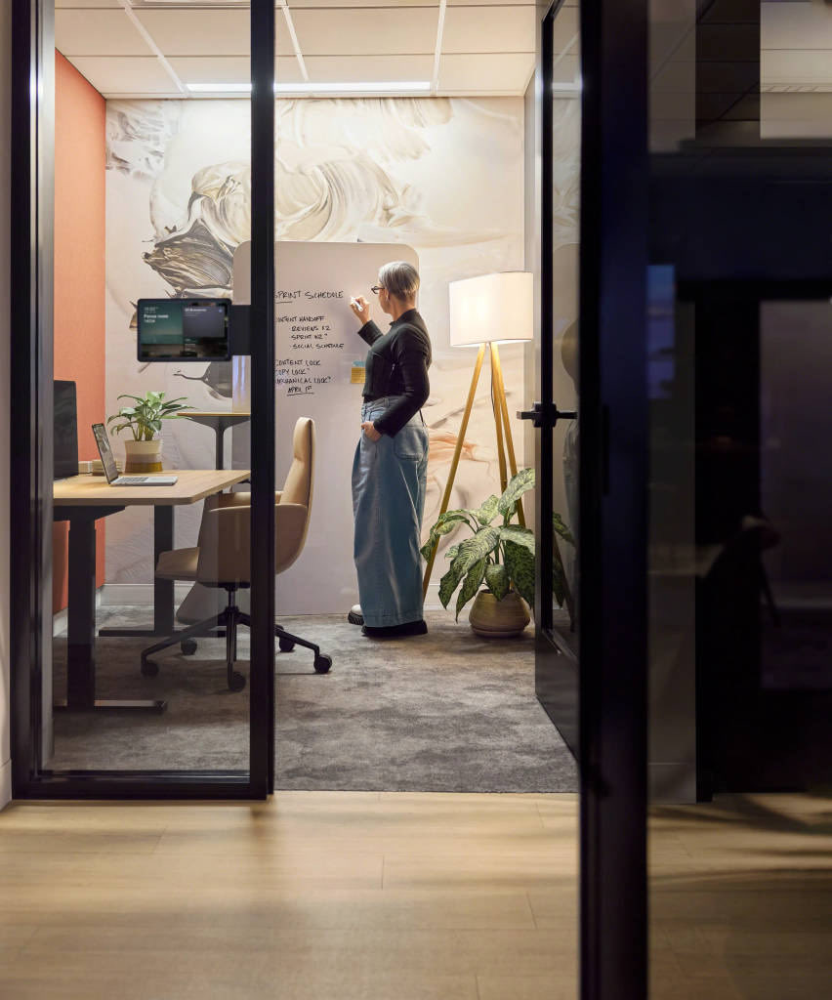

Günlük hayatın hızlı akışında çalışma alanı deneyimleri, bazen vahşi doğadaki canlıların tepkilerine benzeyebilmektedir. Çalışanlar, sürekli olarak bilgi ve kriz taraması yaptıkları bir “aşırı uyanıklık” durumunda sıkışıp kalmaktadırlar. Bu reaktif durum, derin ve etkili bir düşünme sürecine negatif etki etmektedir. Düşünce yapısı, her gün maruz kalınan bilgi bombardımanını işlemekte zorlanmakta ve ekran tabanlı teknolojiler bu hacmi daha da artırmaktadır.
UC Irvine’da Dr. Gloria Mark tarafından yapılan araştırmaya göre, ortalama dikkat süresi 2004 yılında 2,5 dakika iken bugün 47 saniyeye gerilemiştir. Akıllı telefonlar bu düşüşü daha da hızlandırmıştır. Gelinen noktada dikkat, artık kıymetli bir kaynak ve bir tür biyolojik yakıt haline gelmiştir. Araştırmacılar, Steelcase’in “Think Better: Neuroscience as a Competitive Advantage” raporunda incelenen bir kavram olan iki tür odaklanmayı birbirinden ayırmaktadırlar:
• Yönlendirilmiş Dikkat (Controlled Attention): Derin çalışma ve strateji için kullanılan, yüksek oktanlı ve maliyetli bir yakıttır. Sınırlı olmasıyla hızla tükenmektedir.
• Uyarana Dayalı Dikkat (Stimulus-driven Attention): Yüksek bir ses veya hareket eden bir nesne odağı yakaladığında devreye giren ucuz, reaktif bir yakıttır.
Kötü tasarlanmış açık ofisler, çalışanları kalıcı bir uyarana dayalı dikkat moduna zorlamaktadır. Dikkat dağıtıcı unsurları filtrelemek için değerli enerji tüketilmekte ve asıl işe çok az yakıt kalmaktadır.
Sürdürülebilir Dikkat Görevi Çalışması
Steelcase araştırmaları şaşırtıcı bir sonucu ortaya koymaktadır. Mahremiyet, insanların gürültü dahil pek çok dikkat dağıtıcı unsurla başa çıkmasına yardımcı olmaktadır. Ofislerde en sık dile getirilen şikayet, özellikle çalışanların uzun masa düzenlerinde yan yana oturduğu açık planlı yerleşimlerdir. Bu yoğun açıklık, etkileşimi ve iş birliğini teşvik etmek amacıyla tasarlanmış olsa da, kullanıcıların mahremiyetine etki ederek odaklanma süresini kısaltmaktadır. Ancak Steelcase’in Wisconsin-Madison Üniversitesi’ndeki Center for Healthy Minds ortaklığıyla yürüttüğü araştırma, bu dikkat dağıtıcı unsurların yönetilmesi için kolay bir müdahale biçimi sunmaktadır.

Araştırmacılar, bir göreve zaman içinde odaklanma yeteneği olan sürdürülebilir dikkati ölçmüşlerdir. Katılımcılar bilişsel görevleri iki farklı ortamda gerçekleştirmişlerdir; tamamen açık bir planlama ile yarı korunaklı bir bireysel çalışma alanı. Her iki ortama da aynı arka plan ofis gürültüsü verilmiştir. Sonuçlar, mahremiyet sınırlarına sahip katılımcıların, tamamen açık planda çalışanlara kıyasla (aynı gürültü seviyesinde dahi) sürdürülebilir dikkat gerektiren görevlerde belirgin şekilde daha yüksek performans gösterdiğini kanıtlamaktadır. Açık plan kullanıcılarına göre çok daha az hata yapmış ve üstün bir odaklanma sergilenmiştir.
İnsanların güldüğünü veya yan taraftan geçip gittiğini görmek gibi görsel uyaranlara maruz kalındığında, beyin bu dikkat dağınıklığını filtrelemek için enerji harcamaktadır. Periferik (çevresel) görüş harekete karşı son derece hassastır, bu durum tehditleri algılamaya yardımcı olsa da beyne işlenmesi gereken bir dikkat dağınıklığı yaratmaktadır. Bölücü paneller, raf üniteleri veya diğer öğeler bu bilişsel yükü azaltarak beyne gürültüyü filtrelemek için ihtiyaç duyduğu ekstra genişliği sağlamaktadır. Böylece yüksek konsantrasyon gerektiren işlerde çalışanların performansı artmaktadır.
Kart Basma Döneminden Beyin Gücüne
Onlarca yıl boyunca “Devamlılık Çağı”nda (Attendance Era) faaliyet gösterilmiştir. Başarı, fiziksel mevcudiyetle ölçülmüştür. Kartların sabah 08:00’de basılıp akşam 17:00’de çıkılması, üretkenlik için yeterli bir kriter kabul edilmiştir. Yeni gerçeklikte ise yapay zeka rutin görevleri otomatikleştirmekte, en değerli varlık ise bilişsel kapasite, yani belirsizlikleri yönetme ve eleştirel muhakeme yürütme gibi benzersiz insani yetenekler haline gelmektedir. Beyin sağlığının sadece kişisel bir iyi oluş (wellbeing) hedefi olmanın ötesinde, stratejik bir ticari varlık olduğu “Dikkat Çağı”na (Attention Era) girilmiştir.

“Nerede çalışıldığıyla tanımlanan bir dönemden, nasıl düşünüldüğüyle tanımlanan bir döneme geçilmektedir.” I Patricia Kammer, Steelcase WorkSpace Futures Araştırmacısı
Düşünce Süreci İçerisinde Ergonomi
Bugünün düşünce sürecinde, tasarımın çalışma alanlarındaki rolüne dair yeni bir zihniyete ihtiyaç duyulmaktadır. Dikkat dağıtıcı unsurları azaltma düşüncesinden; çalışanların en iyi şekilde düşünmelerine, karmaşık sorunları çözmelerine, yaratıcı olmalarına ve değişim karşısında daha dirençli kalmalarına yardımcı olacak mekanlar tasarlamaya yönelmek gerekmektedir.
Bilim insanları yıllarca yetişkin beyninin büyümesinin durduğuna inanmışlardır. Artık yeni nöronların oluşumu anlamına gelen nörojenez ve beynin yeni bağlantıları (sinapsları) yeniden yapılandırma veya güçlendirme yeteneği olan nöroplastisitenin yaşam boyunca mümkün olduğu bilinmektedir. Ofisler de dahil olmak üzere duyusal açıdan zengin ortamlar tasarlamak bu süreci tetikleyebilmektedir. HKS Küresel İnovasyon Direktörü ve Brain Capital Alliance üyesi Dr. Upali Nanda, “Araştırmalar; çevresel zenginleştirmenin (sosyal, duyusal, fiziksel ve bilişsel uyaranlar) beyinde yeni sinapslar üretebileceğini ve beyni fizyolojik olarak değiştirebileceğini gösteriyor. Zenginleştirilmiş ortamları, beyin sağlığına giden doğrudan ve güçlü bir yol olarak düşünmek gerekiyor” demektedir.

Omurgayı desteklemek için ergonomik koltuklara ihtiyaç duyulduğu kolayca kabul edilmektedir. Bugün tasarımcılar, benzer bir titizliği bilişsel ergonomi için de uygulayabilmektedir. Vücudun duruşunu desteklemenin ötesine geçerek beynin performansının çevresiyle nasıl bir ilişki kurduğunu anlamaya odaklanmaktadır. Bu süreç, tek bir mükemmel oda tipi yaratmakla ilgili değildir. Çalışanların gerçekleştirdikleri iş türlerini desteklerken, beynin en iyi şekilde çalışması için ihtiyaç duyduğu koşulları sağlayan mekan çeşitliliği ile ilgilidir.
Steelcase’in kendi çalışma alanlarında uyguladığı Topluluk Odaklı Tasarım (Community-Based Design) yaklaşımı, çalışanlara nasıl çalışacakları konusunda daha fazla seçenek sunan farklı bölgelerden (districts) oluşan zengin bir çeşitlilik barındırmaktadır. Bu yaklaşım, bilişsel sağlığı geliştiren ve bilişsel gerilemeyi azaltan sosyal bağların kurulması için bir altyapı oluşturmakta, insanların dikkatlerini ve duygularını daha iyi yönetebilecekleri alanlar sağlamaktadır. Nihayetinde, çalışanların gelişmesine ve organizasyonların daha çevik olmasına yardımcı olmaktadır.Perkins & Will Direktörü ve The Building Brains Coalition’ın son raporunun ana yazarlarından Dr. Debbie Beck, “Esnek çalışma alanları, tasarımın beyin sağlığını nasıl destekleyebileceğinin en iyi örneğidir. Bu uyarlanabilir ortamlar, bireylerin çevrelerini kendi çalışma tarzlarına ve tercihlerine göre şekillendirmelerine olanak tanıyarak odaklanmayı ve bilişsel performansı artırır. Yeni teknolojilere ve çalışma metodolojilerine uyum sağlayan esnek çalışma alanları, beynin zinde ve çevik kalmasına yardımcı olarak zihinsel direnci ve üretkenliği destekler” yorumunda bulunmaktadır.
Çalışma Alanlarında Nöromimariyi Destekleyen Unsurlar
Kurumların, çalışan verimliliğini desteklemek için keşfedebileceği çeşitli alan tipleri bulunmaktadır:
Bağlantı Alanları (Spaces for connection)
Açık planlı yerleşimler tamamen olumsuz bulunmamalıdır. Kafe alanları gibi açık alanlar, bir şehir merkezi görevi görerek bireysel masalara rahat bir alternatif sunmakta ve bağ kurma noktası oluşturmaktadır. Bu alanlar, ortak enerjinin ve resmi olmayan bilgi aktarımının gerçekleştiği yerlerdir. Patricia Kammer, “Yalnızlık, beyinde bir ‘tehdit durumu’ tetikler. Sosyal olarak izole edilmiş hissedersek inovasyon yapamayız” diyerek durumu açıklamaktadır. Ofisler, sanal toplantı platformlarının tam olarak taklit edemeyeceği bir ortak kimlik sunmaktadır. Bunun bir nedeni de yüz yüze etkileşimin, risk almanın ve inovasyonun temeli olan güven ve psikolojik güvenliği inşa etmek için gerekli nörokimyasalları salgılatmasıdır.
Yenilenme Alanları (Spaces for rejuvenation)
Beyin sekiz saat boyunca kesintisiz çalışamamaktadır. Kaynakları yenileme alanlarına ihtiyaç duyulmaktadır. Cevap biyolojide saklıdır. Psikolojik çalışmalar, pozitif duygunun dopamin seviyelerini artırdığını, bunun da yaratıcı problem çözme yeteneğini geliştirdiğini göstermektedir.NBBJ Fellow’u ve moleküler biyolog Dr. John Medina, doğanın pozitif duyguyu tetikleyen güçlü bir unsur olduğunu hatırlatmaktadır. Biyolojiyle örtüşen belirli ipuçları bulunmaktadır: Mavi, yeşil ve turuncu renk paletleri odağa yardımcı olabilirken, yuvarlatılmış kenarlar çalışanların kendilerini keskin köşelere kıyasla daha güvende hissetmelerini sağlamaktadır. Ahşap ve yün gibi doğal malzemeler, stresi azaltmaya ve bilişsel kapasiteyi sıfırlamaya yardımcı olan organik unsurlardır.
Hareket Alanları (Spaces for movement)
Bedensel deneyimler ve fiziksel çevre; hafıza, duygu ve karar verme dahil olmak üzere bilişsel süreçleri etkilemektedir. Hareket etmek, çalışan belleğin yükünü hafifleten beyin bölgelerini devreye sokarak enerjiyi sorunlara özgün çözümler üretmek üzere diğer alanlara serbest bırakmaktadır.Hareketi ve fiziksel olarak iş birliğine katılımı teşvik eden alanlar; dikkati, yaratıcılığı ve problem çözmeyi geliştiren dopamin salgısını hızlandırmaktadır. Yazı tahtaları ve dikey mantar panolarla donatılmış alanlar, grup çalışmalarına fiziksel katılımı desteklerken bilişsel yük boşaltmayı da mümkün kılmaktadır. Bilgiyi kalıcı ve görünür kılarak, çalışan belleği depolama yerine işleme süreci için serbest bırakmaktadırlar. Mekan, adeta harici bir sabit diske dönüşmektedir.
Odaklanma Alanları (Spaces for focus)
Sürekli gürültüye ve görsel uyarana maruz kalındığında, beyin bilinçaltında mekanı izlemeye devam etmektedir. Açık planların işleyebilmesi için, dikkat dağıtıcı unsurları azaltan podlar veya korunaklı bireysel çalışma istasyonları gibi mahremiyet sunan alanlarla dengelenmesi gerekmektedir. Odaklanmak her zaman tamamen kapalı mekanlar gerektirmemekte, doğru görsel bariyerler de bu işlevi görebilmektedir.

Bilgi akışının hızını yavaşlatmak mümkün değildir. Ancak dikkati koruyan, bilişsel yükü azaltan ve çalışanları en yüksek potansiyelleriyle performans göstermeleri için güçlendiren çalışma alanları tasarlanabilmektedir. Çalışma alanlarının verimliliği alan büyüklüğü ile ölçülmemektedir. Önemli olan mevcut alanın, kullanıcı gereksinimleriyle doğru ve ideal oranda çalışabilme yeteneğidir.
Kaynaklar: